CHAPTER 1流行搖滾入門
「Top 40」是音樂產業的慣用說法，指最受歡迎、最暢銷，也最常被播放的流行歌曲。隨著時間演變，這個詞也會用來指某個年代的熱門歌曲。本次 play-along 的樂譜採用穩定的八分音符節奏，屬於流行舞曲風格，接近 Maroon 5、Michael Jackson、Lady Gaga 等人的作品。
結構：八小節樂句
這份樂譜採用多數搖滾與流行音樂常見的結構：八小節樂句。這個樂句共有八個小節，第一小節之後的每個小節都以表示持續演奏既定 groove 的斜線記號標示。此外，也可以為各個樂句加上標示樂曲段落的 A、B 等字母、反覆記號，或同時使用兩者。
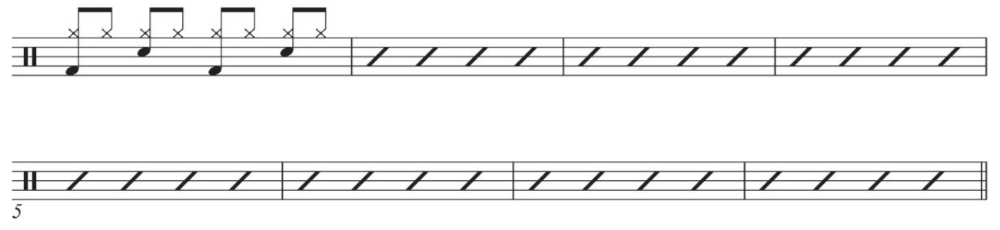
表示持續演奏既定 groove 的斜線記號
這些斜線記號除了標示小節中的各拍，例如第 1、2、3、4 拍，也表示鼓手要持續演奏既定的 groove。
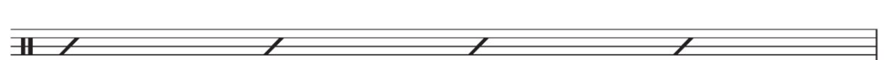
當 groove 已經寫成樂譜後，後續就可以用這些斜線記號代替完整記譜，標示持續演奏這個 groove 時的各拍。
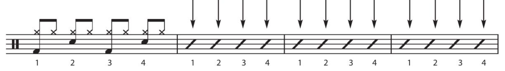
標示樂曲段落的 A、B 等字母
在這個以八小節樂句構成的結構中，每新增一個段落，也就是另一個八小節樂句，就會用 A、B 等字母標示。每個字母都代表歌曲中的不同段落，也可以用來標示重要的音樂特徵，例如結構上的差異。
反覆記號
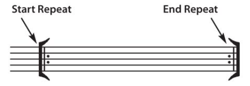
同一個八小節樂句如果要再演奏一次，不必把相同的內容寫兩遍，只要用反覆開始記號和反覆結束記號標示即可。因此，演奏到第八小節結束時，就要立刻回到這個樂句的第一小節，再演奏一次。例如：
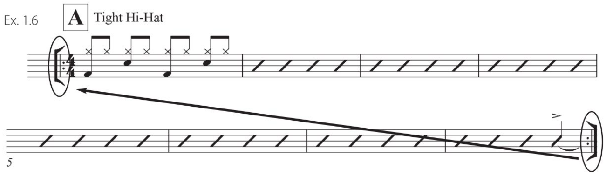
Ensemble Figures
Ensemble figures 是全樂團一起演奏的節奏，寫在五線譜的中間。遇到這些節奏時，要優先演奏它們，而不是繼續依斜線記號演奏既定的 groove。在這份樂譜中，A 段第八小節的第四拍就有 ensemble figures，位置正好在進入 B 段之前。
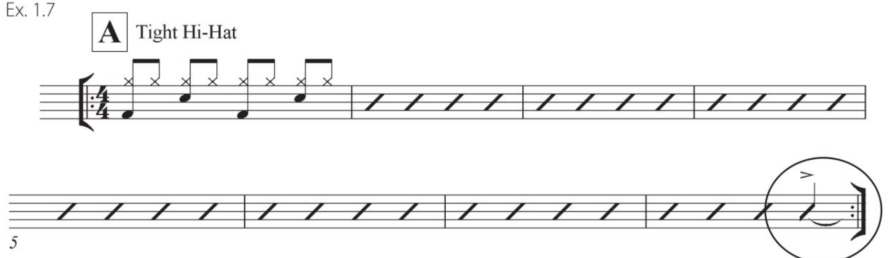
因此，你需要和樂團一起強調這些節奏。一個合適的演奏方式，是在第四拍加入 cymbal crash，和原本就會在這一拍演奏的小鼓同時落點。
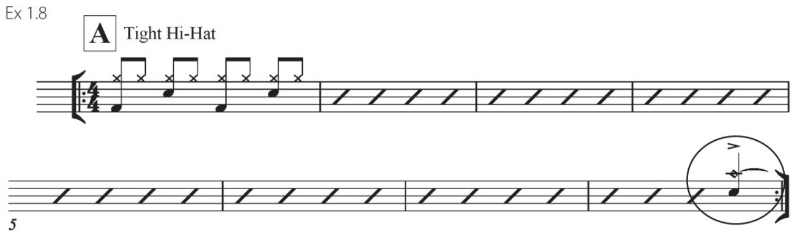
樂譜 B 段第四小節的第三拍和第四拍，也有 ensemble figures。
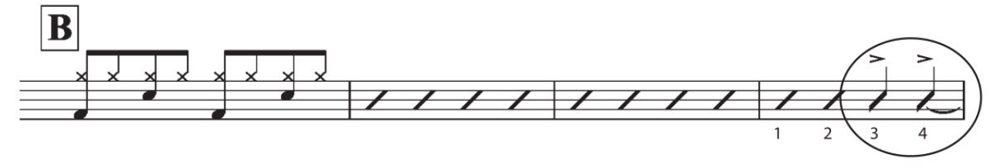
同樣地，你需要和樂團一起強調這些節奏。一個合適的演奏方式，是在第三拍同時演奏大鼓與 cymbal crash，第四拍則同時演奏小鼓與 cymbal crash。
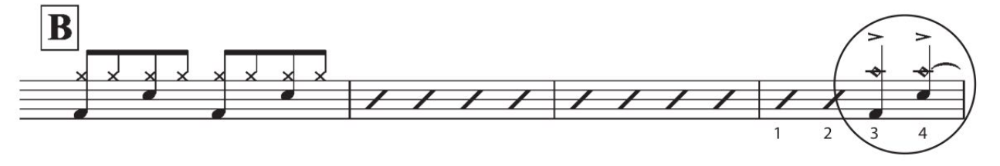
樂譜結尾的最後一個小節，在第一拍和第二拍也有 ensemble figures。
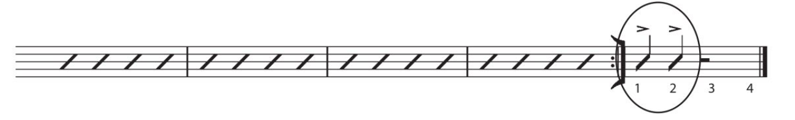
這裡也需要和樂團一起強調這些節奏。一個合適的演奏方式，是在最後一個小節的第一拍和第二拍，每一拍都同時演奏小鼓、落地鼓和大鼓。
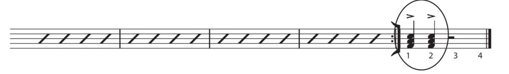
速度標示
速度標示用來說明音樂的演奏速度，以每分鐘的拍數（BPM）表示，通常也會指定用哪一種音符作為一拍。下方的例子是以四分音符為一拍，每分鐘 120 拍。
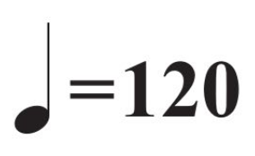
The Count-Off
Count-off 可以說是「你演奏生涯中最重要的四個音」。這四聲數拍搭配 stick clicks，會決定這首歌，以及接下來幾分鐘演奏的速度。因此，你要特別留意 count-off，確保樂團每位成員都能清楚聽見，而且速度穩定。
演奏本教材各單元的樂譜時，要在樂曲開始前兩個小節進行 count-off，數法如下：
1－2……1－2－3－4
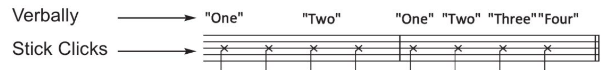
把 count-off 和樂譜接在一起，開頭的演奏方式如下：
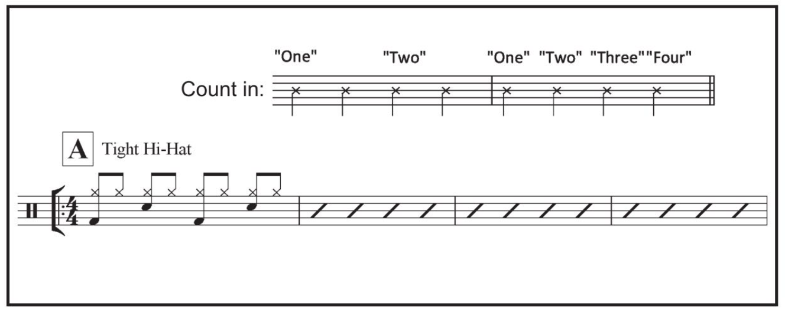